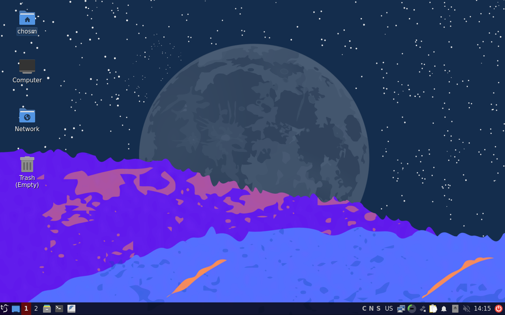
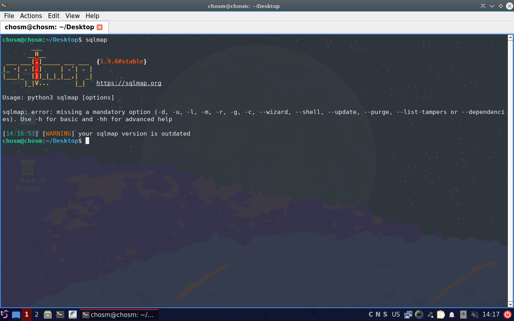
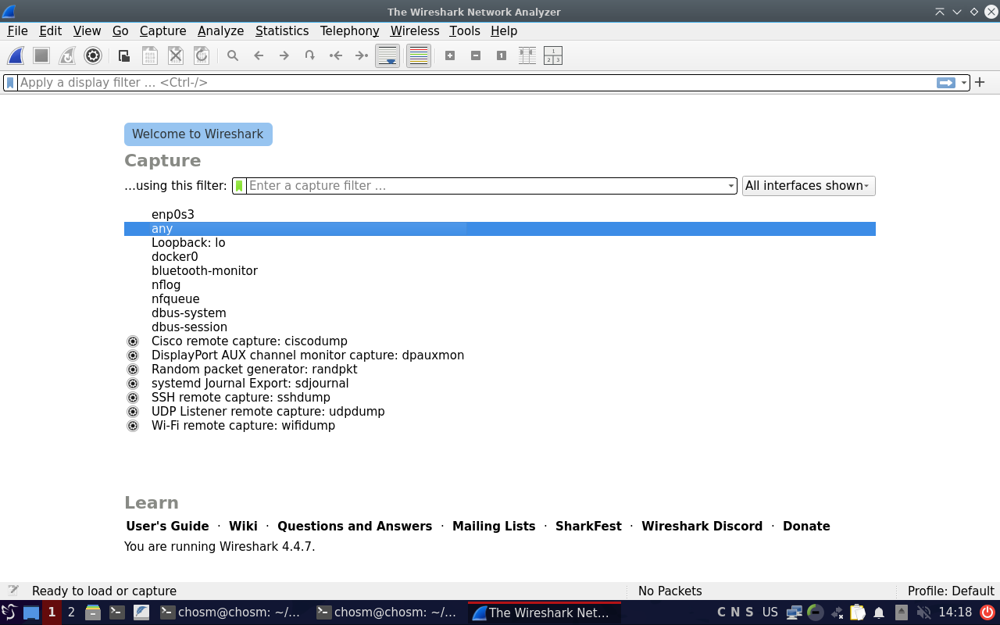
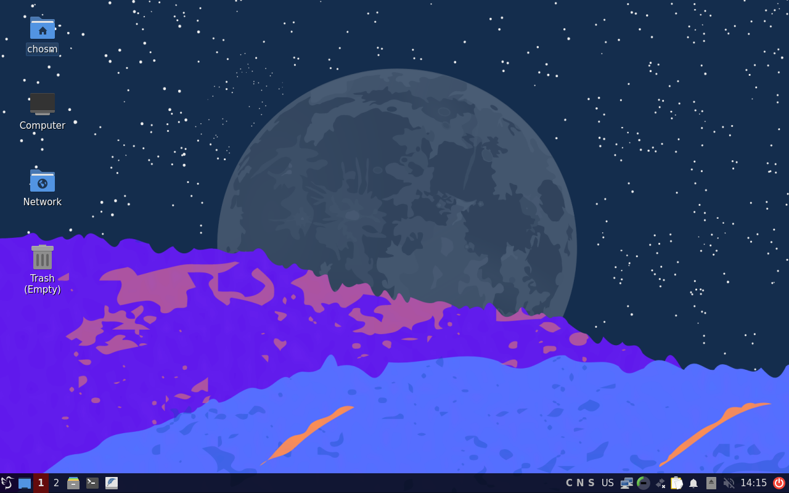
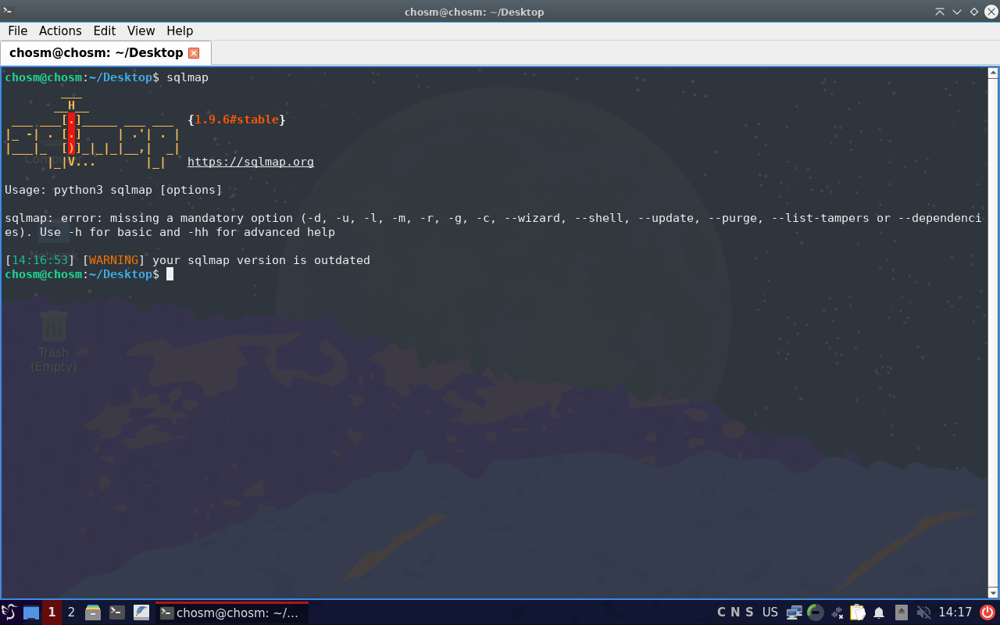
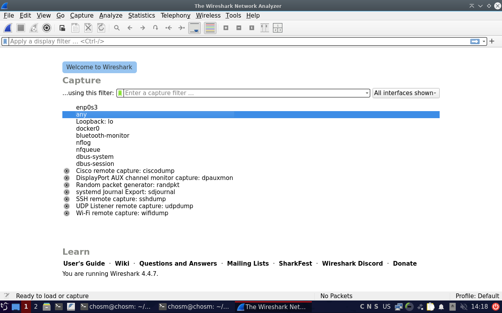

About Chosm Linux
Chosm Linux is a lightweight, Debian-based indie Linux distribution designed for cyber security professionals, learners, and enthusiasts.
It focuses on speed, simplicity, and a clean environment while providing essential tools for penetration testing and system analysis.
Chosm Linux comes with a carefully selected set of security and penetration testing tools, pre-installed and pre-configured for immediate use. The toolkit focuses on network analysis, passive information collecting wireless security, etc. while keeping the system lightweight and responsive.
Some tools that come pre-installed in Chosm Linux: Nmap, Hydra, Aircrack-ng, Gobuster, Netcat, Wireshark, Ghidra, Arpspoof, Proxychains, Bettercap/Ettercap, Sqlmap, Hashcat, John The Ripper
Default Login Credentials
Chosm Linux is provided with default credentials for initial access. It is strongly recommended to change the password after first login.
- Username: chosm
- Password: root
Additional tools can be installed easily using the Debian package manager.
- Debian Stable base
- Lightweight & fast desktop
- Pre-installed security tools
- LXQt desktop environment
- LightDM display manager
- Optimized for VirtualBox
- Open-source (GPL v3)
 




